FlowTrace User Manual
Surface well testing data acquisition and monitoring · Version 1.6.7
1 Introduction
FlowTrace is a data acquisition and monitoring application for surface well testing. It reads field sensors through a Modbus device, shows the values live, logs every reading to a database and turns the data into tables, graphs and professional reports.
FlowTrace gives the well test crew one place to gather electronic readings, add measurement calculations (gas, liquid, oil and water rates, SF-DP, choke records), watch the well respond as parameters change and produce the reports the client needs at the end of the job.
What you can do
- Read up to 125 sensor channels from a Modbus device over serial (RS-485 / COM port) or Ethernet (Modbus TCP, RTU over TCP).
- Watch live values in the Live Stream, Monitoring View, Key Parameters and Graphs.
- Log every reading automatically to the Project database and a CSV file.
- Add orifice gas, liquid, oil and water measurement columns, SF-DP and choke records.
- Set alarms on any column, with popup, sound and an Alarm Log.
- Filter, edit and export your data to Excel.
- Build PDF reports in Graph Studio, End of Well Reports (EOWR), calibration reports, delivery notes and P&ID packages.
- Keep each well or job in its own Project.
Concepts
| Term | Meaning |
|---|---|
| Project | One well or job. A Project holds its own settings, channels, measurement columns, database, CSV logs and exports. |
| Channel | One sensor value read from the Modbus device (for example THP or Separator Temp). |
| Reading | One row of data: all channel values at one date and time, saved once per Log interval. |
| Session | One run from Start Monitoring to Stop Monitoring. Every Start creates a new session. |
| Measurement column | A calculated column added from the Measurement menu (gas rate, liquid rate, SF-DP ...). |
| Virtual column | Your own calculated column, built from channels with the Formula Builder. |
About this manual
Every screen in this manual is a real screenshot of FlowTrace. The sample Project shown is Demo Well, a six-hour flowback test with three choke changes. Your screens show your own Project, channels and data.
2 How FlowTrace Works
This chapter explains what FlowTrace does behind the screens: where a value comes from, when it is saved, and how the calculated columns are worked out. Knowing this makes it easy to set up a job correctly and to trust the numbers in your reports.
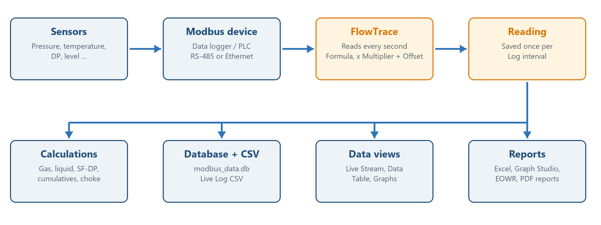
From sensor to reading
- Sensors on the well test package (pressure, temperature, DP, level ...) are wired to a Modbus device such as a data logger or PLC.
- FlowTrace connects to the device over serial (RS-485) or Ethernet, as set in System Config.
- While monitoring, FlowTrace asks the device for its registers every second. Each register (or register pair for a 32-bit Float) is one channel.
- Each raw value is converted into an engineering value: first the channel Formula (if any), then × Multiplier + Offset.
- The Monitoring View and Key Parameters show these values live, every second.
- Once per Log interval FlowTrace saves one reading: the channel values at that moment, or, with Average gaps ticked, the average of all the one-second values since the previous reading.
What happens to each reading
- The reading is written to the Project database (modbus_data.db) and to a CSV file in the Live Log CSV folder, so a copy exists even outside FlowTrace.
- All measurement columns (gas rate, liquid / oil / water, SF-DP, virtual columns) are calculated from that reading and saved with it.
- The current choke size and type are attached to the reading.
- Every alarm level is checked against the new values.
- The Live Stream, Data Table and Graphs add the new row.
How the calculated columns work
| Column | How it is calculated |
|---|---|
| Gas Rate | AGA-3 orifice equation from the hw (DP), Pf (pressure) and Tf (temperature) channels of the same reading and the orifice parameters. The Z-factor comes from AGA-3 (DAK, from gas gravity) or AGA-8 (see Measurement Tools). |
| Cumulative Gas | Previous cumulative + Gas Rate × the real time since the previous reading. The cumulative unit follows the rate unit (MMscf/d gives MMscf). |
| Liquid / Oil / Water Rate | Measured rate × Meter Factor, split by BS&W into water and oil; oil is corrected by Shrinkage and Combine Meter Factor. |
| Liquid / Oil / Water Cumulative | Previous cumulative + rate × the real time since the previous reading. |
| SF-DP | SF value minus DP value of the same reading. |
| Choke Size / Type | Taken from the Choke Manager row that was in service at the reading time. |
| Virtual column | Your Formula Builder expression, worked out with the values of the same reading. |
Cumulatives
- A cumulative only counts time while monitoring runs. The gap between a Stop and the next Start is never added.
- Starting Cumulative in each measurement tool sets the value the total starts from (for example the volume produced before FlowTrace was connected). It may be negative.
- To start a total again from any reading, right-click that row in the Data Table and choose Restart cumulative from this reading....
Changing parameters during a job
Orifice plates, BS&W, gas gravity and chokes change during a test. FlowTrace keeps the history: a new value applies from the reading where it was changed onward, and every earlier reading keeps the value it was calculated with. Green cells in the Data Table show these engineer-entered values; double-click a cell to enter a change at that exact row.
Sessions
Every Start Monitoring opens a new session and every Stop Monitoring closes it. Sessions keep separate runs apart in the database, so a restart after a power cut or a cable fault never mixes data. All sessions of a Project are shown together in the Data Table, Graphs and exports.
Projects and files
Everything above lives in the Project folder (Documents\FlowTrace\Projects\<Project name>): settings, channels and measurement set-up in config.json, readings in modbus_data.db, and the CSV logs and reports. Opening another Project switches all of it at once.
3 Typical Job Workflow
A well test with FlowTrace follows the same three stages every time.
Before the job (rig-up)
- Project > New Project...: one Project per well or job.
- System Config: connection type, port or IP address and Modbus settings of the logger.
- Channels: start register, channel count, data type, sensor names, units and calibration (Multiplier / Offset). Check the values with Test Read.
- Measurement tools: set up Orifice Gas Flow, Liquid / Oil / Water and SF-DP with their channels and parameters.
- Choke Manager: enter the starting choke.
- Alarms: set limits on the critical columns (for example THP high, separator pressure high).
- Log interval: choose how often a reading is saved.
During the job
- Click Start Monitoring. The status shows Live when readings arrive.
- Keep Monitoring View or Key Parameters on a second screen for the crew.
- Record every choke change in Choke Manager, and every orifice plate, BS&W or gas gravity change in the Data Table at the row where it happened.
- Watch trends in Graphs and acknowledge alarms as they come.
- Send interim figures with Average (Export to Excel or WhatsApp Message) and Export Data.
After the job
- Click Stop Monitoring.
- Export the final data with Export Data (Excel).
- Build the graph report in Graph Studio and export the PDF.
- Fill in Calibration Reports, MMT and P&ID as required and export them.
- Put the section documents in a ZIP and generate the EOWR Report.
- File > Save Project As... to keep a complete copy of the job.
4 Installation and Activation
Installing FlowTrace
- Run FlowTrace_Setup.exe and follow the installer.
- Start FlowTrace from the desktop or Start menu shortcut.
- The first time FlowTrace starts, type a name for your first Project (for example the well name).
To update, run the new installer. It upgrades the existing installation in place and keeps all your Projects and settings. Close FlowTrace before installing, or let the installer close it for you.
Activation
FlowTrace needs an activation key made for this computer. A key works only on the computer it was made for.
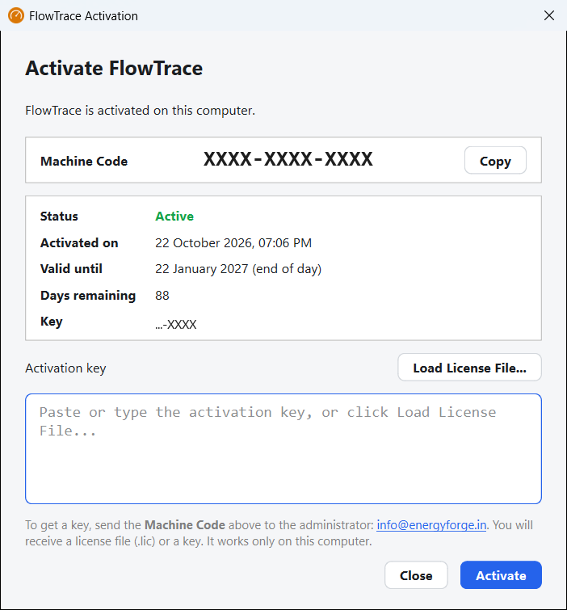
- Open Activation > Activate / Renew.... The window shows this computer's Machine Code.
- Send the Machine Code to the administrator (phone, WhatsApp or email). Copy copies it. No internet is needed on this computer.
- You receive a license file (.lic) or a key. Click Load License File..., or paste the key and click Activate.
License status
The license status is always shown at the bottom left of the main window. Click it to open the Activation window.
| Status shown | Meaning |
|---|---|
| Licensed · N days left | Full license, active. |
| Trial · N days left | Time-limited trial license. |
| License expires in N days | Fewer than 15 days left. Ask for a renewal key. |
| License expired | Enter a new key to continue. |
| License cancelled | The administrator cancelled this computer's license. |
- In the last 15 days a reminder appears every time FlowTrace is opened, and while it stays open (once a day, twice a day in the last 7 days).
- When the license ends, monitoring stops. All data logged so far is kept.
- A new computer, a Windows reinstall or a motherboard change gives a new Machine Code and needs a new key.
5 Screen Layout
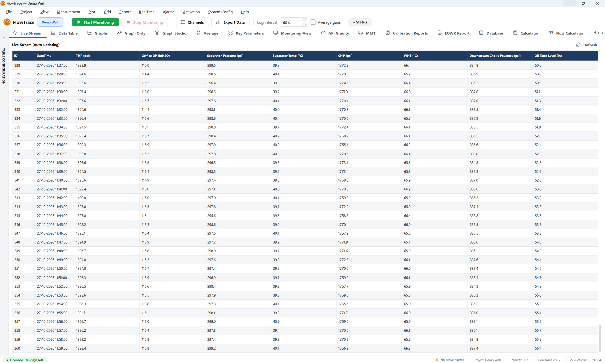
The FlowTrace window has five main areas:
| Area | What it is for |
|---|---|
| Menu bar | File, Project, View, Measurement, Plot, Grid, Report, RealTime, Alarms, Activation, System Config and Help. |
| Toolbar | Active Project name, Start / Stop Monitoring, Channels, Export Data, Log interval, Average gaps and the monitoring status. |
| Sidebar (left) | Table Configuration: choose which columns are shown. Open or close it with the arrow button. |
| Tabs | Live Stream, Data Table, Graphs, Graph Only, Graph Studio, Average, Key Parameters, Monitoring View, API Gravity, MMT, Calibration Reports, EOWR Report, Database, Calculator, Flow Calculator and P&ID. |
| Status bar (bottom) | License status, messages, active alarms, Project, log interval, version and clock. |
Menu Bar
The menus give access to every function of FlowTrace.
File: export data, column order and visibility, Save Project As, Exit.
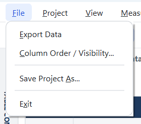
Project: shows the current Project; New, Open and Import Project.
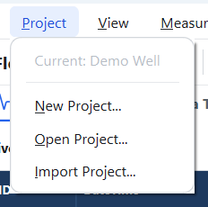
View: jump to any tab, show hidden tabs, and choose the Light or Dark theme.
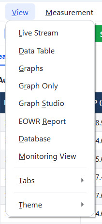
Measurement: channels and all measurement tools (liquid, orifice gas, oil, water, SF-DP, choke).
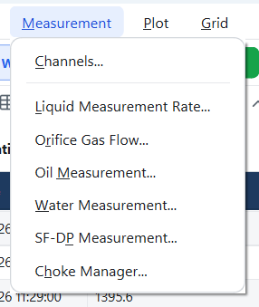
Alarms: active alarms and Alarm Log, Acknowledge All (Ctrl+Shift+A), fire extinguisher expiry check.
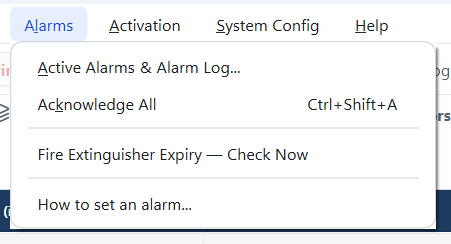
Help: FlowTrace Help (F1), What's New, Quick Start Guide, Troubleshooting and About.
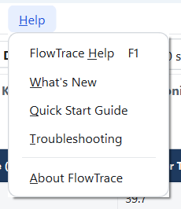
| Menu | Items |
|---|---|
| Plot | Open Graphs, Graph Only, Full Screen Graph. |
| Grid | Data Table, Resize Columns to Fit. |
| Report | Export Data. |
| RealTime | Start Monitoring, Stop Monitoring. |
| Activation | License status, Activate / Renew... |
| System Config | Opens the System Configuration window directly (connection and storage). |
Toolbar
| Control | Use |
|---|---|
| Project name | The active Project. |
| Start Monitoring | Connects to the device and starts logging readings. |
| Stop Monitoring | Stops logging. All logged data stays saved. |
| Channels | Opens Channel Configuration. |
| Export Data | Exports the Data Table to Excel. |
| Log interval | How often a reading is saved (1 to 300 seconds). |
| Average gaps | Saves the average of the readings taken during each interval instead of a single reading. |
| Status | Monitoring status: Connecting, Live, No data or Stopped. |
Table Configuration Sidebar
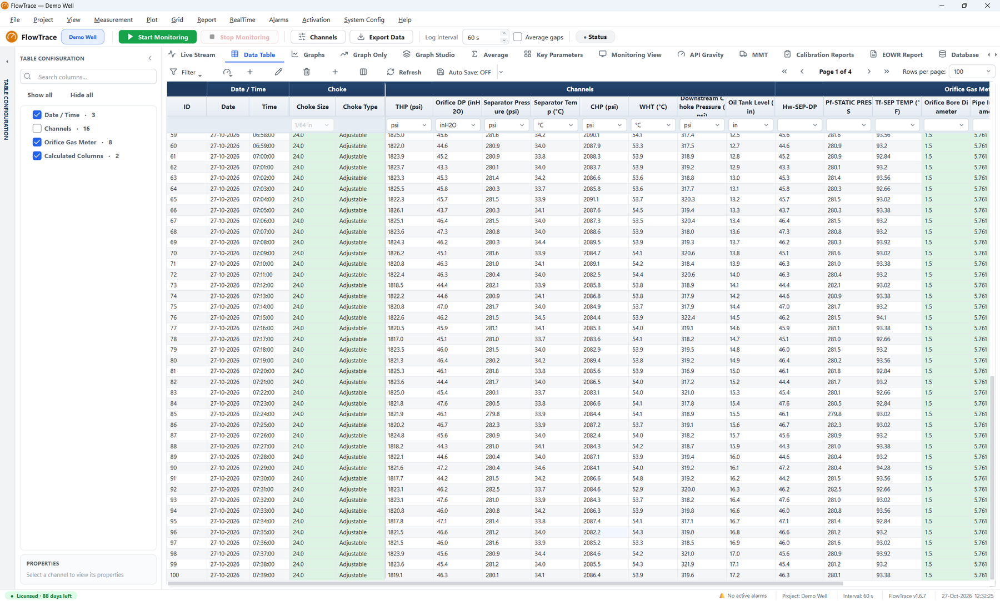
The sidebar controls which columns are shown in the Data Table, the Database tab and Excel exports.
- Type in the search box to find a column.
- Tick or untick a column to show or hide it. Ticking a group heading shows or hides the whole group.
- Use Show all / Hide all to change everything at once.
- Select a column to see its details in the Properties panel.
6 Projects
A Project keeps everything for one job together: settings, channels, measurement columns, the database, CSV logs and exports. Switching Project switches all of it.
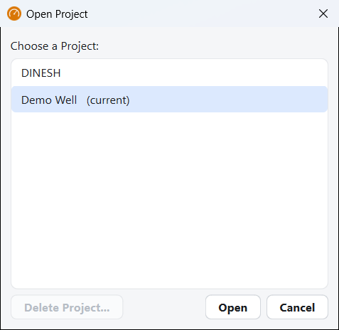
| To do this | Use |
|---|---|
| Start a new job with empty data | Project > New Project... |
| Go back to an earlier job | Project > Open Project... |
| Bring in a Project from another PC or a backup | Project > Import Project... |
| Make a full copy of the current Project (backup or sharing) | File > Save Project As... |
Quick Start: your first live reading
- Create a Project for the job: Project > New Project..., type the well name, click OK.
- Connect the hardware. Plug the Modbus device (or USB-to-RS485 converter) into the computer and power it on.
- Set up the connection in System Config (see Device Connection and Channels).
- Name your channels in Channels (see Device Connection and Channels).
- Choose the Log interval in the toolbar, for example 60 s for one reading per minute.
- Click Start Monitoring. The status changes to Live when the device answers and readings appear in the Live Stream.
7 Device Connection and Channels
System Configuration
Click System Config in the menu bar (next to Help).
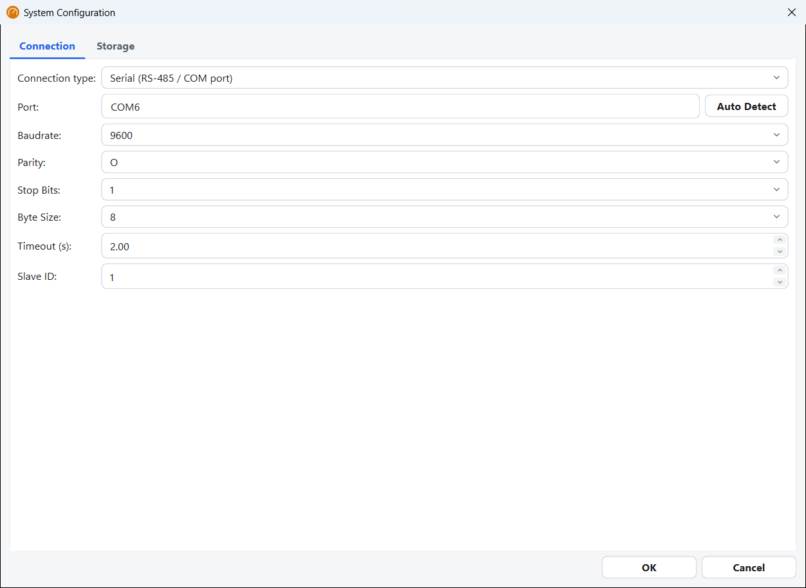
| Setting | What to enter |
|---|---|
| Connection type | Serial (RS-485 / COM port), Ethernet - Modbus TCP, or Ethernet - RTU over TCP (for a serial-to-Ethernet converter in RTU mode). |
| IP address / TCP port | Ethernet only: the device IP address and TCP port (usually 502). This PC must be on the same network as the device. |
| Port | Serial only: the COM port of the device or converter (see Windows Device Manager). Auto Detect finds it for you. |
| Baudrate | Communication speed, for example 9600. |
| Parity | None, Even or Odd. Must match the device. |
| Stop Bits / Byte Size | Usually 1 and 8. |
| Timeout (s) | How long to wait for an answer before retrying. |
| Slave ID | The Modbus address of the device. |
On the Storage tab you can change the Export Path (CSV logs and exports) and the Database Path. Click OK to save.
Channel Configuration
Channels are the sensor values FlowTrace reads from the device. Click Channels in the toolbar or Measurement > Channels....
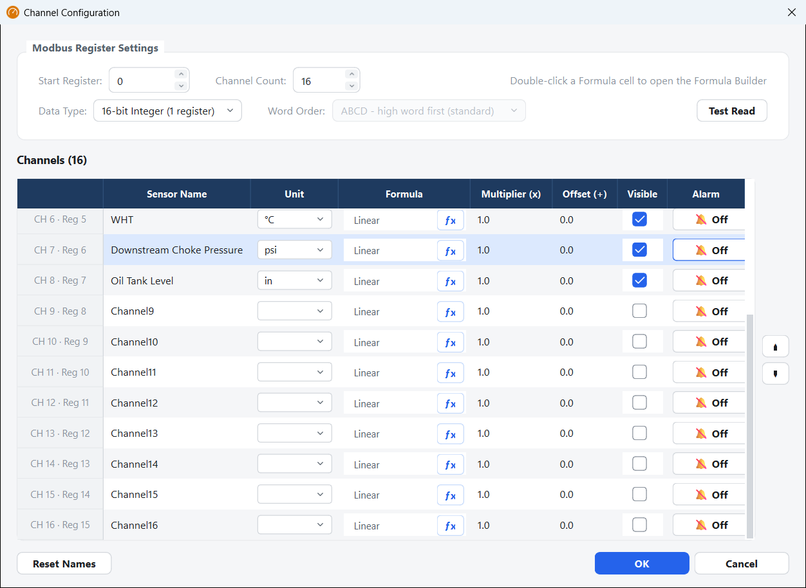
- Set Start Register (the first register to read), Channel Count (1 to 125) and Data Type: 16-bit Integer (one register per channel) or 32-bit Float (two registers per channel). For 32-bit Float also choose the Word Order.
- Fill in one row per channel (see the table below).
- Use Test Read to check the values the device returns before you start.
- Click OK. The new names and units appear in every tab.
| Column | Use |
|---|---|
| Sensor Name | A clear name, for example THP or Separator Temp. |
| Unit | The unit the value is shown in. |
| Formula | Click fx to open the Formula Builder when the raw value needs converting. Leave Linear for a direct reading. |
| Multiplier (x) / Offset (+) | Scale and shift the value for calibration. |
| Visible | Untick to hide a channel you do not need. |
| Alarm | Set warning / alarm levels for the channel (see Alarms). |
Start and Stop Monitoring
- Set Log interval in the toolbar. Optionally tick Average gaps.
- Click Start Monitoring (also in the RealTime menu). FlowTrace tries to connect up to 3 times and shows each attempt.
- Click Stop Monitoring when the job is done.
- Every Start creates a new logging session, so separate runs are never mixed.
- Each saved reading goes to the Project database and to a CSV file in the Live Log CSV folder.
- The Live Stream, Data Table, Graphs and Monitoring View update automatically.
8 Viewing Data
Live Stream
The Live Stream tab shows the 50 latest readings with one column per channel. The table follows the newest reading automatically.
- Scroll up to look at earlier rows; the table stays where you are until you scroll back to the bottom.
- Drag a column border to resize a column; your widths are kept.
- Click Refresh to reload from the database.
Data Table
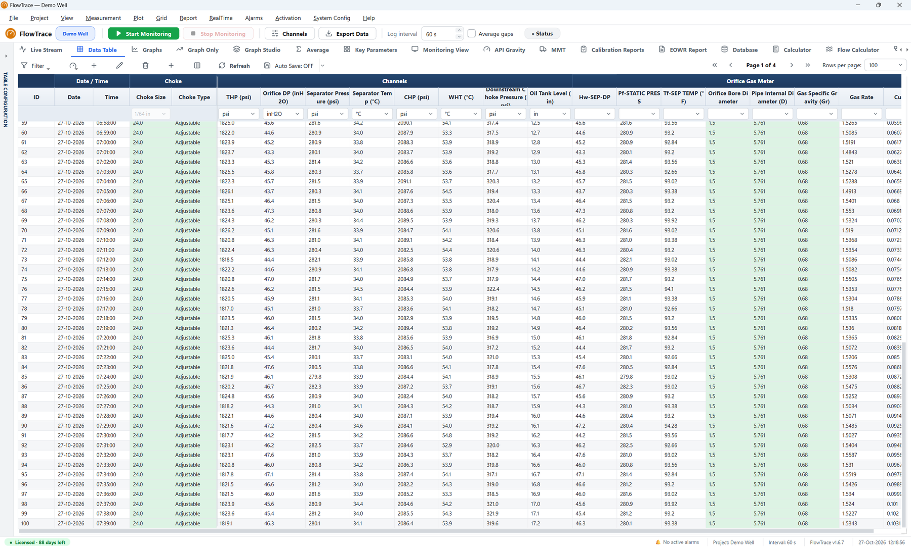
The Data Table is the main grid: one row per saved reading, one column per channel and measurement column.
Find the rows you need
- Click Filter in the Data Table toolbar.
- Set the Start and End date / time.
- Optional: choose an Interval Filter (seconds, minutes or hours) to show one row per interval.
- Click Apply Filter. Reset returns to today's full day.
Work with records
| Button | Use |
|---|---|
| Add Record | Add a reading by hand. |
| Edit Record | Change the selected reading. |
| Delete Record | Remove the selected reading (you are asked to confirm). |
| Add Virtual Column | Add your own calculated column. |
| Reorder Columns | Change the column order and visibility. |
Headings, units and colors
- A band above the headings groups the columns: Date / Time, Choke, Channels and each measurement.
- Under every heading you can pick or type a unit label. It is a label only and never changes a value; to convert values, change the unit in Channels.
- Green cells are values entered by the engineer (choke, BS&W, orifice data); a darker shade marks the row where the value was changed.
- Double-click an editable cell to change it directly.
- Auto Save saves the table to Excel on a timer; the arrow next to it sets the interval.
- Use rows-per-page and the First / Previous / Next / Last buttons to move through large data sets.
- Sensor re-wired to another channel mid-job? Right-click that channel heading and choose Sensor moved to another channel...; earlier readings stay on the old channel.
Column order and visibility
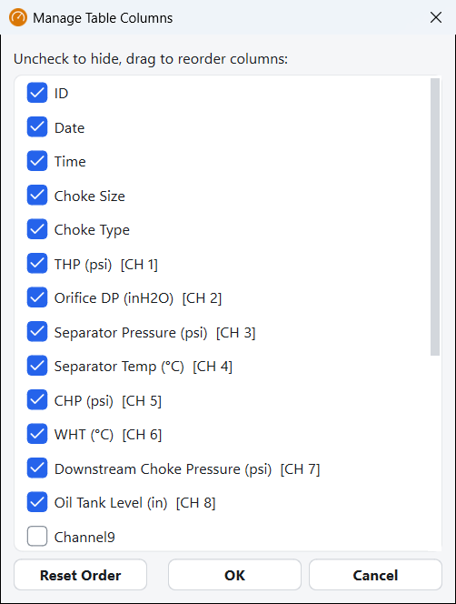
Untick a column to hide it and drag to change the order. Reset Order restores the default order.
Monitoring View
Monitoring View is a compact window with the current value of every channel and measurement column, grouped the same way as the sidebar. Click the Monitoring View tab; it opens as a separate window you can keep beside the main window or move to a second screen.
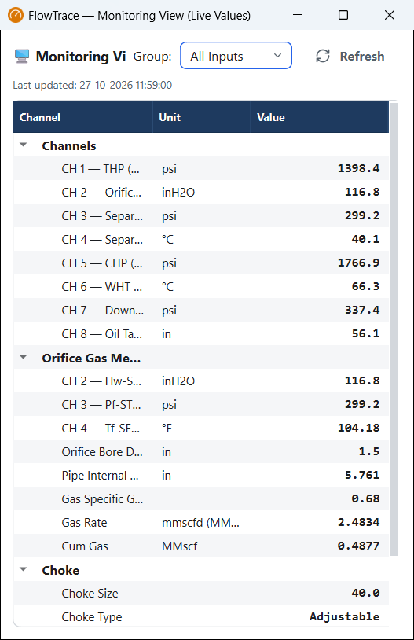
- Use the Group filter to show one group only, or All Inputs for everything.
- Values refresh every second while monitoring.
- Clicking the tab again brings the same window to the front; its size and position are remembered.
Key Parameters
Key Parameters shows the channels you choose as large cards that can be read from across the cabin. Like Monitoring View, it opens as its own window.
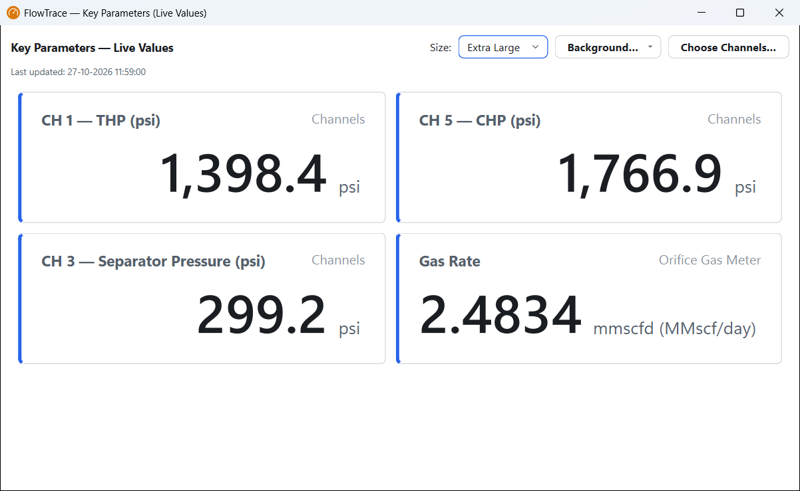
- Choose Channels... picks the cards to show.
- Size sets the card size and Background... the card color.
- Each card shows the channel number, name, value and unit.
9 Measurement Tools
The Measurement menu adds ready-made measurement columns to your data. They all work the same way:
- Open the tool from the Measurement menu.
- Choose which sensor channel feeds each input, or enter a fixed value where offered.
- Enter the meter or job parameters.
- Click Save as Column / Save Config.
The new columns appear as their own group in the Data Table, the sidebar, Monitoring View and Excel exports, and are filled in automatically for every reading.
Orifice Gas Flow (AGA-3)
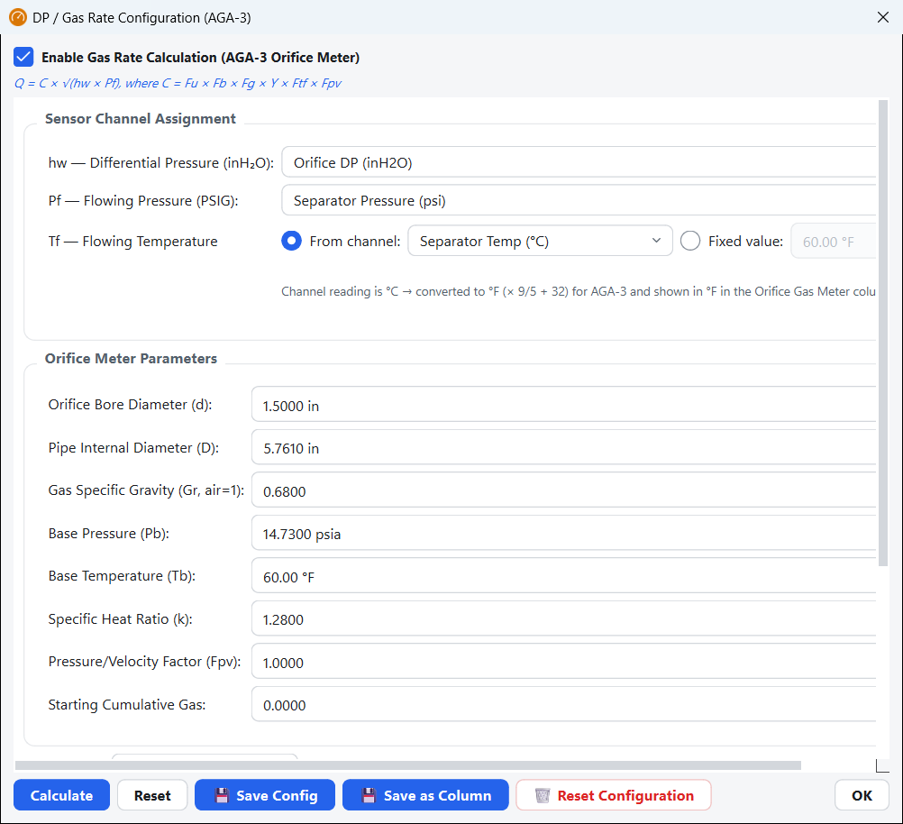
- Open Measurement > Orifice Gas Flow... and tick Enable Gas Rate Calculation.
- Under Sensor Channel Assignment choose the hw (differential pressure), Pf (flowing pressure) and Tf (flowing temperature) channels. Tf can also be a fixed value.
- Choose the Gas Calculation Method: AGA-3 or AGA-8 (see below).
- Enter the orifice bore diameter, pipe internal diameter, gas specific gravity, base pressure and temperature, k, Fpv and the starting cumulative gas.
- Choose the output unit.
- Click Calculate to preview with the latest reading.
- Click Save as Column to add the gas rate and cumulative gas columns.
The gas rate follows the AGA-3 orifice equation: Q = C × √(hw × Pf), where C = Fu × Fb × Fg × Y × Ftf × Fpv. A Tf channel is read in °C and converted to °F for the calculation.
Gas Calculation Method: AGA-3 or AGA-8
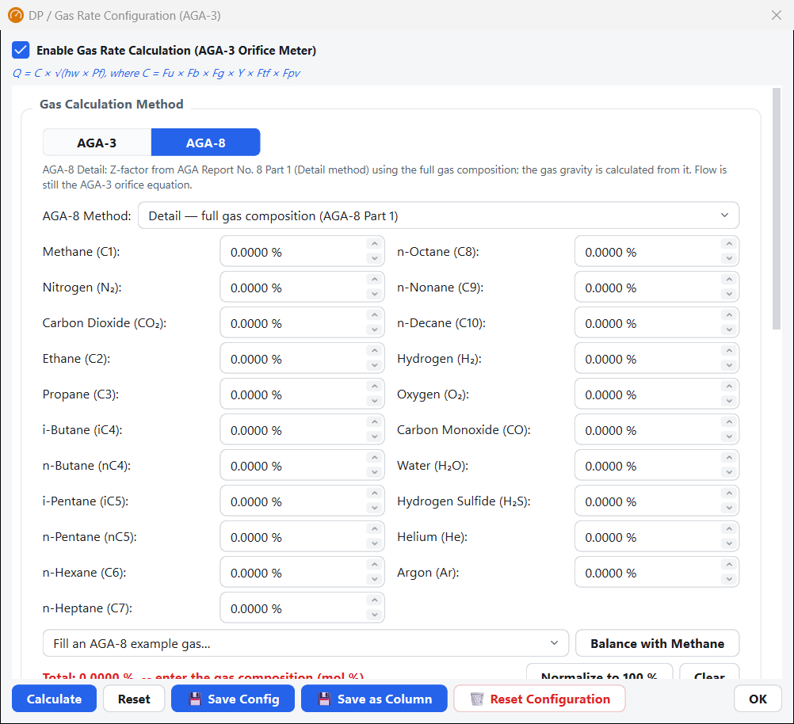
At the top of the dialog choose how the gas compressibility (Z-factor) is worked out:
| Gas Calculation Method | Z-factor from | You enter |
|---|---|---|
| AGA-3 | DAK correlation (the original calculation) | Gas specific gravity |
| AGA-8 Detail | AGA Report No. 8 Part 1, Detail method | Full gas composition (mol %, total 100) |
| AGA-8 GERG-2008 | AGA Report No. 8 Part 2 (GERG-2008) | Full gas composition (mol %, total 100) |
| AGA-8 Gross Method 2 | AGA Report No. 8 Part 1, Gross method | Gas gravity + N₂ % + CO₂ % |
| AGA-8 Gross Method 1 | AGA Report No. 8 Part 1, Gross method | Gas gravity + heating value (Btu/scf) + CO₂ % |
- Click AGA-8 and pick the AGA-8 Method.
- Enter the gas composition in mol % (Detail / GERG-2008), or gas gravity with N₂ / CO₂ / heating value (Gross).
- Use Fill an AGA-8 example gas... to load a typical gas, Balance with Methane to make the total 100 % with methane, or Normalize to 100 %.
- Click Calculate to preview, then Save as Column.
Liquid, Oil and Water Measurement
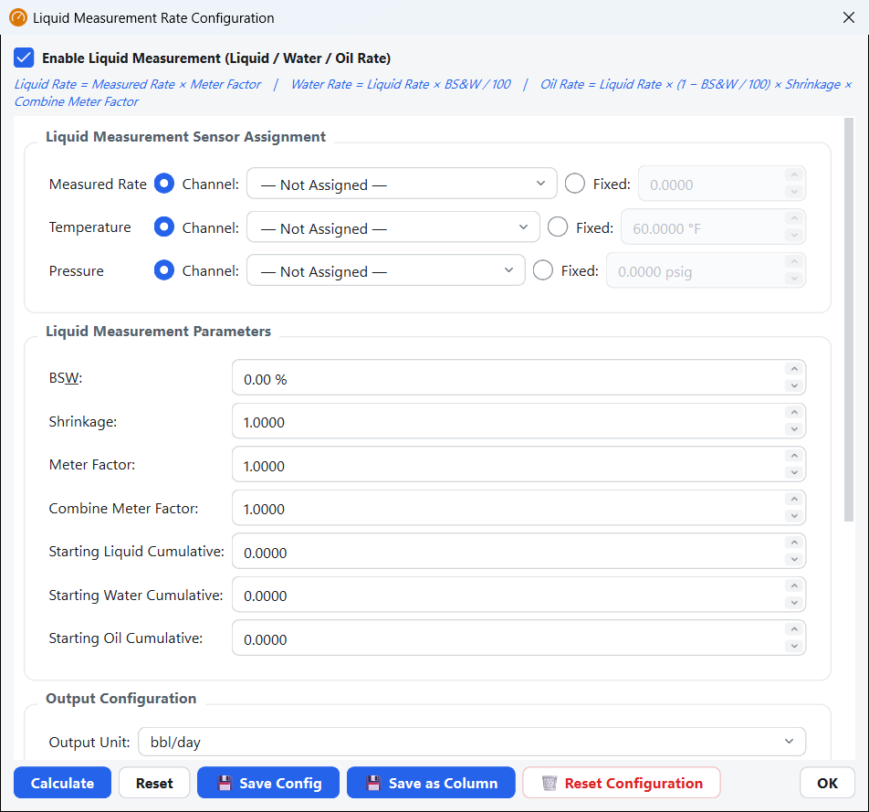
- Open Measurement > Liquid Measurement Rate..., Oil Measurement... or Water Measurement....
- Assign the measured rate sensor and, where asked, the temperature and pressure sensors (or fixed values).
- Enter BS&W, shrinkage, meter factor, combine meter factor and starting cumulatives.
- Choose the output unit and click Save as Column. Rate and cumulative columns are added and fill in automatically.
Liquid Rate = Measured Rate × Meter Factor; Water Rate = Liquid Rate × BS&W / 100; Oil Rate = Liquid Rate × (1 − BS&W / 100) × Shrinkage × Combine Meter Factor.
SF-DP Measurement
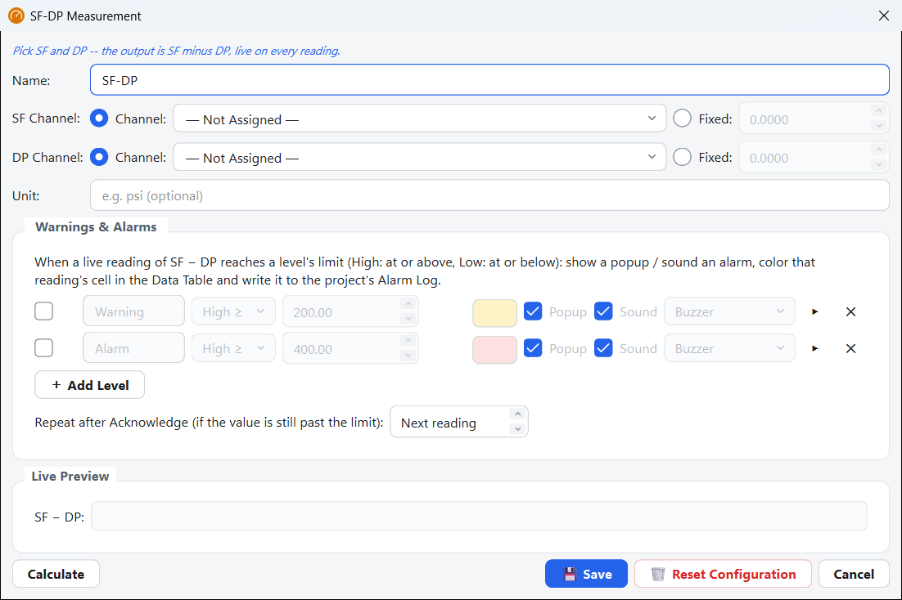
- Open Measurement > SF-DP Measurement....
- Choose the SF channel and the DP channel (or a fixed value for either) and an optional unit.
- Optional: under Warnings & Alarms add levels (High or Low), each with a limit, color, popup and sound.
- Click Save. The SF − DP value is calculated for every reading.
Choke Manager
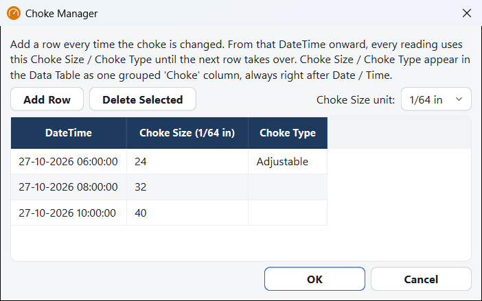
Record the choke size and type used during the test, so every reading shows the choke in service at that time.
- Open Measurement > Choke Manager....
- Click Add Row each time the choke is changed and enter the date / time, choke size and choke type.
- Choose the Choke Size unit.
- Click OK. Every reading from that time on shows that choke, until the next change.
Virtual Columns
- In the Data Table click Add Virtual Column.
- Give the column a name and unit.
- Build the expression from your channels in the Formula Builder.
- Save. The column is calculated for every reading, old and new.
10 Graphs
Graphs Tab
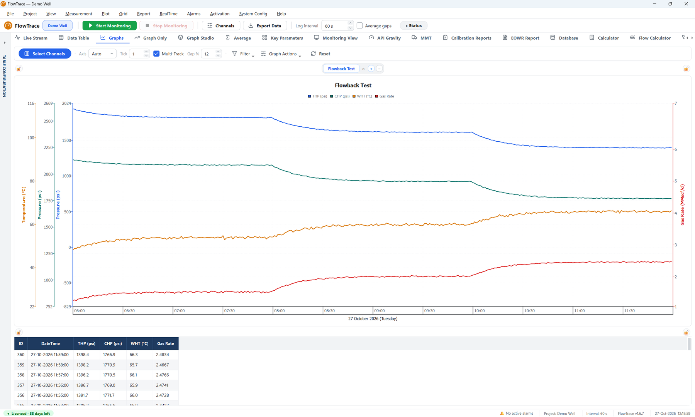
- Open the Graphs tab.
- Click Select Channels to choose the channels to plot, their Y-axis and line color.
- Click Filter, set the date / time range and interval, then Apply Filter. Reset clears the filter.
- Optional: tick Multi-Track to give each channel its own band.
- Hover over a line to read the exact value and time.
- Right-click the chart to add, edit or remove an annotation.
- The table under the chart lists the plotted values.
Zoom, move and lock
- Scroll the mouse wheel over the chart to zoom the time axis; drag inside the chart to move along time.
- Grab a Y-axis and drag it up or down to move it; drag near its top or bottom end to stretch it.
- The padlocks at the chart corners lock an edge: the two top padlocks fix the Y-axis tops, the two bottom padlocks fix the time start / end.
Graph profiles
The strip above the chart holds separate saved graphs, each with its own channels, axes and locks. Click + to add a graph, − to remove the current one, and click a name to switch. Right-click a name to rename it.
Graph Actions menu
- Export Graph Data: the plotted data to Excel.
- Export Graph as PDF.
- Reset View: undo zoom, moves and locks.
- Full Screen: press Esc to leave.
Graph Only and Full Screen
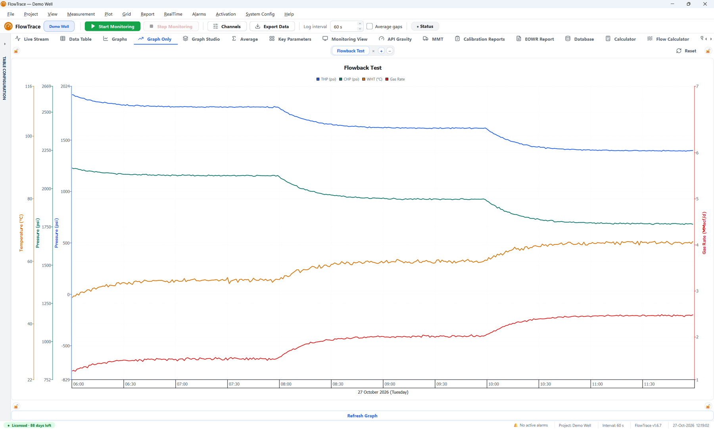
The Graph Only tab shows the same chart with nothing else on screen, ideal for a second monitor. Plot > Full Screen Graph fills the whole screen; press Esc to exit.
Graph Studio (PDF Reports)
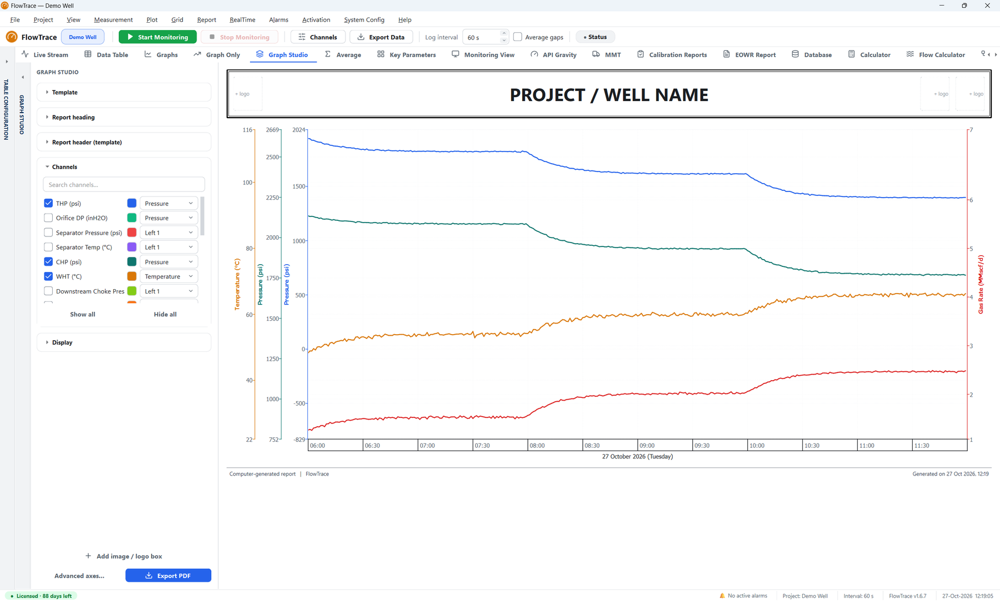
Graph Studio builds a finished report page: header band with logos, title, subtitle, chart, notes and footer.
- Template: pick a saved template or create a new one.
- Report heading: type the title, subtitle, footer and notes.
- Report header: type the well name. Click a dashed logo box to add a logo (left = your company, right = client).
- Channels: choose what to plot and set the time range.
- Display: adjust colors, axes and style.
- Click Export PDF and choose where to save the file. The PDF matches the preview exactly.
11 Alarms
Any Data Table column can have an alarm: channels, gas rate, cumulative gas, liquid / oil / water, SF-DP and virtual columns.
- In the Data Table, right-click the column heading and choose Alarm....
- Add up to 5 levels. Each level is High (at or above the limit) or Low (at or below) with its own name, limit, color, popup and sound.
- Set Repeat after Acknowledge if the alarm should come back while the value stays past the limit.
Channels can also be set in Measurement > Channels (Alarm column), and SF-DP in its own window.
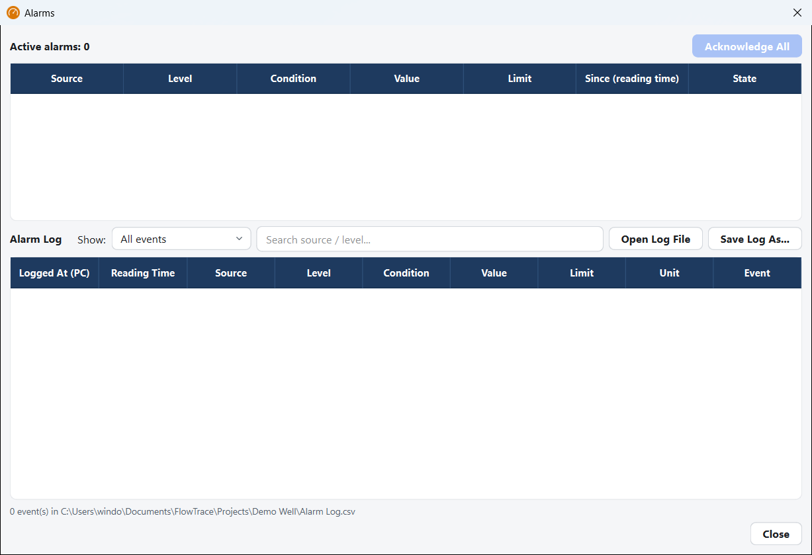
- Alarms > Active Alarms & Alarm Log... lists the alarms that are active now and every alarm event.
- Acknowledge All (Ctrl+Shift+A) acknowledges every active alarm.
- Every alarm, acknowledge and return to normal is written to the Project's Alarm Log. Save Log As... saves a copy.
- Fire Extinguisher Expiry — Check Now shows the fire extinguisher expiry alarm at once instead of waiting for the scheduled day / night reminder.
12 Reports and Export
Export Data to Excel
- Filter the Data Table to the rows you want and choose the columns in the sidebar.
- Click Export Data (toolbar, File menu or Report menu).
- Choose where to save the file.
The workbook has the same grouped headers as the Data Table and includes an image of the current graph.
EOWR Report (End of Well Report)
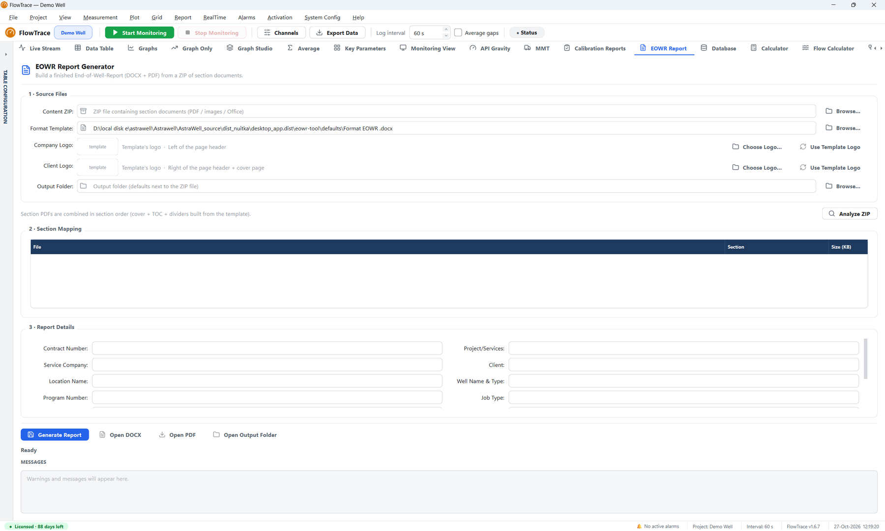
- Source Files: choose the content ZIP (PDFs, images, Office files), the Word format template (a default is provided) and the output folder.
- Logos (optional): next to Company Logo and Client Logo click Choose Logo.... The company logo goes on the left of the page header, the client logo on the right and on the cover page.
- Section Mapping: click Analyze ZIP and check which report section each file goes into.
- Report Details: fill in the cover and header fields.
- Click Generate Report and wait for the progress bar to finish.
- Use Open DOCX, Open PDF or Open Output Folder to see the result.
MMT: Delivery Note and MMR
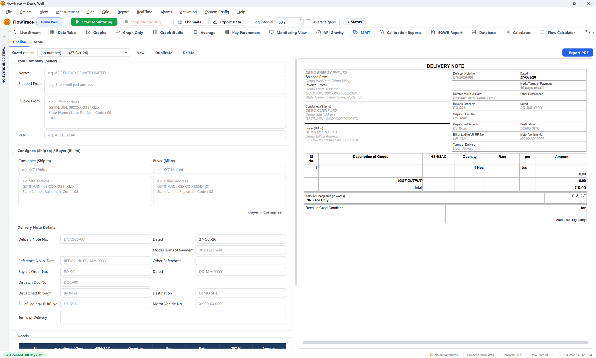
The MMT tab prepares material movement documents. The Challan sub-tab is a delivery note; the MMR sub-tab is the material movement register.
- Fill in the seller, consignee, buyer, delivery note details and the goods table on the left; the preview on the right updates as you type.
- Saved challan keeps every document; use New, Duplicate and Delete to manage them.
- Click Export PDF to save the finished document.
Calibration Reports
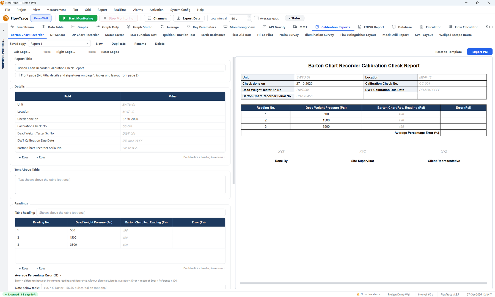
Calibration Reports holds ready-made forms for the site checks of a well test job, each on its own sub-tab:
| Group | Reports |
|---|---|
| Instrument calibration | Barton Chart Recorder, DP Sensor, DP Chart Recorder, Meter Factor |
| Safety function tests | ESD Function Test, Ignition Function Test, Earth Resistance, Hi-Lo Pilot |
| HSE | First-Aid Box, Noise Survey, Illumination Survey, Fire Extinguisher Layout, Mock Drill Report |
| Site layouts | SWT Layout, Wellpad Escape Route |
- Pick the report sub-tab.
- Fill in the details and the reading table on the left. The report preview on the right updates as you type.
- Optional: add a Left Logo... and Right Logo....
- Click Export PDF.
Saved copy keeps several copies of each report (New, Duplicate, Rename, Delete). Reset to Template restores the original form.
P&ID
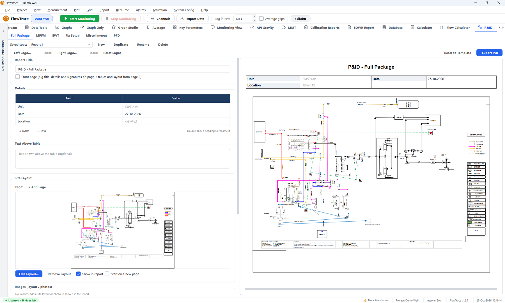
The P&ID tab produces piping and instrumentation diagram packages: Full Package, MPFM, EWT, Fix Setup, Miscellaneous and PFD. Each has a report title, details table, site layout drawing (Edit Layout...) and images, and is exported with Export PDF.
13 Calculators
These tabs are stand-alone tools. They do not change your logged data.
Average
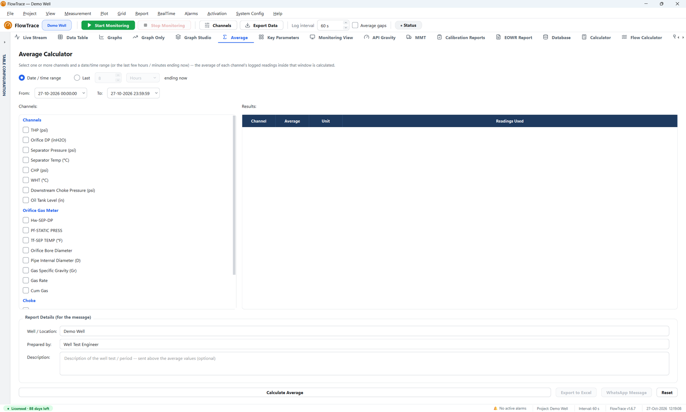
- Choose a Date / time range (From / To), or Last N hours / minutes ending now.
- Tick the channels and measurement columns to average.
- Click Calculate Average. Each result shows its unit and the number of readings used.
- Fill in the Report Details and use Export to Excel or WhatsApp Message to send the results.
Calculator
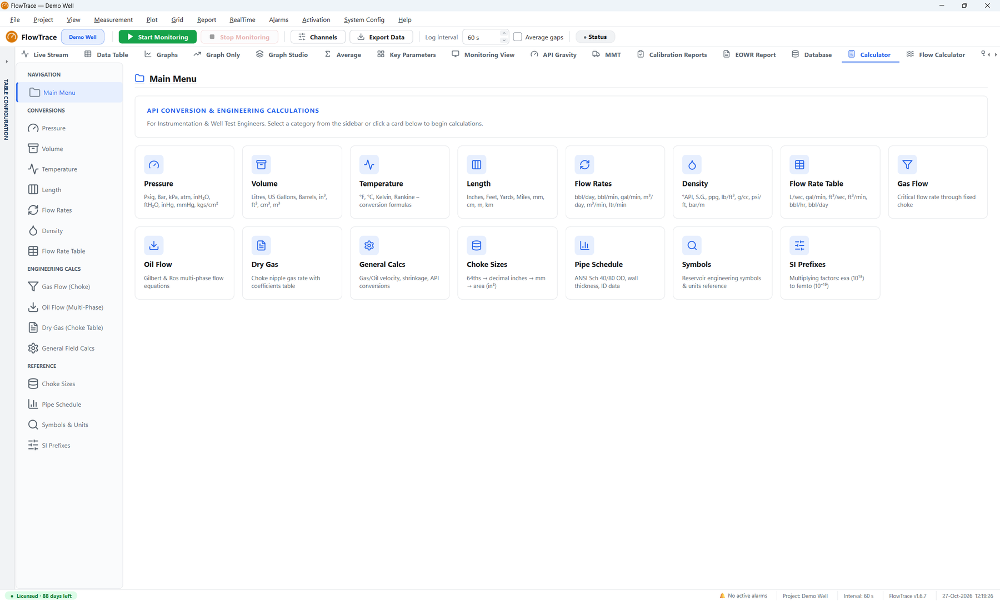
Unit conversions (pressure, volume, temperature, length, flow rates, density), gas and oil flow through a choke, dry gas, general field calculations, choke sizes, pipe schedule, symbols and SI prefixes. Pick a card or a sidebar entry.
Flow Calculator
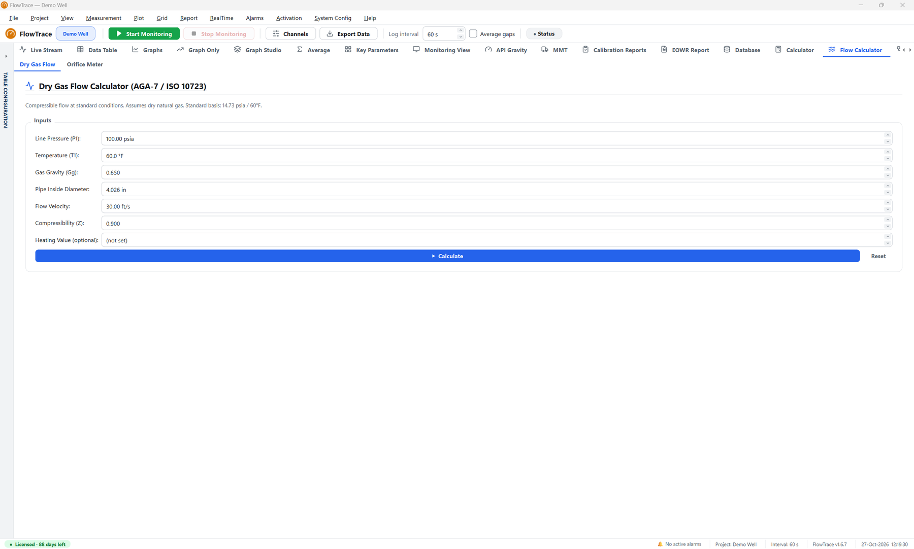
Stand-alone Dry Gas Flow (AGA-7 / ISO 10723) and Orifice Meter (ISO 5167 / AGA-3) calculators.
API Gravity
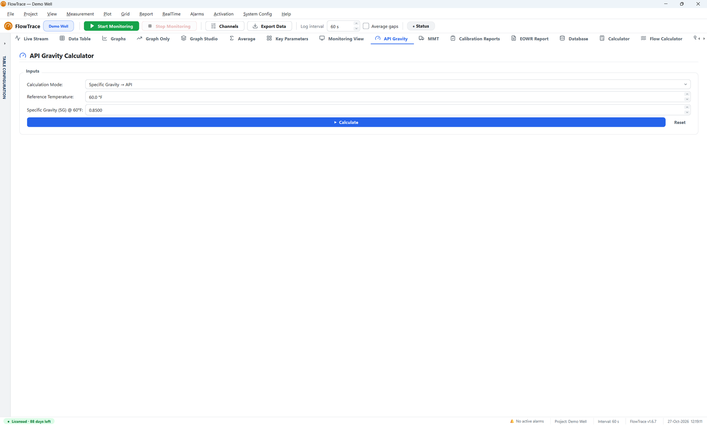
Converts Specific Gravity, API Gravity and Density into each other at the chosen reference temperature.
14 Data Management
Database Tab
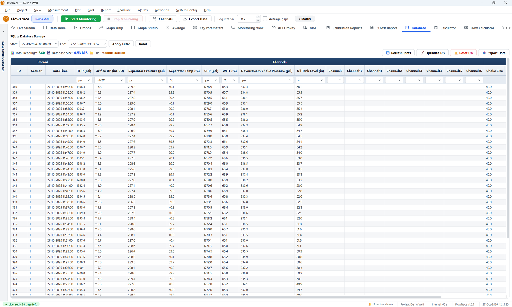
- Filter by start and end date, then click Apply Filter.
- See total readings, database size and file location.
- Refresh Stats: update the numbers.
- Optimize DB: compact the database file. Safe; no data is removed.
- Export Data: export the database to Excel.
- Reset DB: clears all readings of this Project. An Excel backup is saved first and you are asked to confirm.
Where your data is stored
| Item | Location |
|---|---|
| All Projects | Documents\FlowTrace\Projects\<Project name> |
| Settings of a Project | config.json inside the Project folder |
| Readings | modbus_data.db inside the Project folder |
| CSV logs | Live Log CSV folder in the export path |
| Automatic upgrade backups | Documents\FlowTrace\Upgrade Backups |
- Your data is kept outside the program folder. Installing, reinstalling or uninstalling FlowTrace never deletes it.
- The first time a new version starts, FlowTrace backs up every Project automatically.
- To move a job to another PC: File > Save Project As on the old PC, then Project > Import Project on the new one.
Theme and Display
- View > Theme: Light (offices, bright cabins) or Dark (night shifts, dim control rooms). Applies the next time FlowTrace starts. Reports and exports always use light colors.
- File > Column Order / Visibility...: arrange and hide columns.
- Column order, hidden columns and graph set-ups are saved with each Project.
15 Help and Troubleshooting
Built-in Help
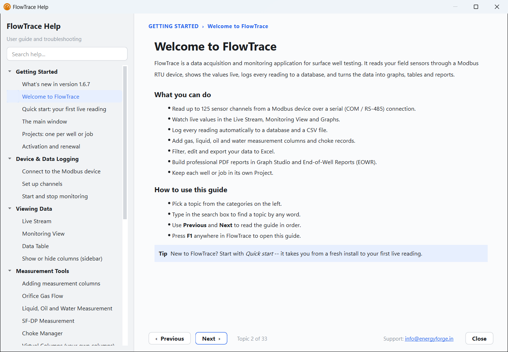
The Help window groups the guide into categories on the left. Type in the search box to find a topic, and use Previous / Next to read in order.
Cannot connect to the device
| Message / symptom | What to do |
|---|---|
| Could not open COM port | Check the cable and converter are plugged in and the port number is correct. Close any other program using the port. |
| Access is denied | Another program or a hidden duplicate COM port holds the port. In Device Manager > View > Show Hidden Devices > Ports, uninstall grey or duplicate entries, reconnect and try again. |
| The device did not respond | Baudrate, Parity, Stop Bits or Slave ID do not match the device. Correct them in System Config. |
| Connection drops during a job | Monitoring stops safely. Fix the cable or power, then click Start Monitoring; a new session starts and earlier data is kept. |
Values look wrong or are missing
- Wrong scale: check the channel Unit, Formula, Multiplier and Offset in Channels.
- Values in the wrong columns: check Start Register and Channel Count against the device register map.
- A column is missing: it may be hidden; tick it in the sidebar.
- Measurement column is empty: open its tool from the Measurement menu and check that every input has a channel.
- Rows missing in the Data Table: reset the date / time filter.
Graphs and exports
| Symptom | What to do |
|---|---|
| Graph is empty | The time window has no data. Set Start / End to a period with readings, or click Reset. |
| Graph stays zoomed or a band looks squeezed | Axis locks or a manual zoom are active. Use Graph Actions > Reset View. |
| Excel export fails | The target file is open in Excel. Close it and export again. |
| EOWR: Office files not converted | Install Microsoft Office, or convert those files to PDF before putting them in the ZIP. |
Activation messages
| Message | What to do |
|---|---|
| This activation key is not valid for this computer | The key was made for another Machine Code. Send this computer's Machine Code and ask for a new key. |
| This key has already been entered on this computer | Nothing to do; check the license status at the bottom left. |
| This key has been cancelled by the administrator | Ask the administrator for a new key. |
| Start Monitoring is refused | The license has expired or was cancelled. Open Activation > Activate / Renew... and enter a new key. |
Support
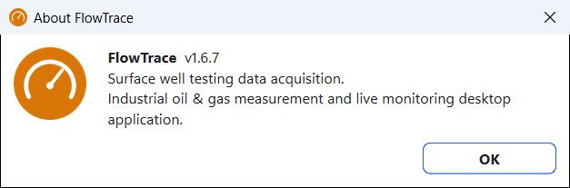
Your version number is shown in Help > About FlowTrace. Quote it when you contact support.
Support and activation keys: info@energyforge.in